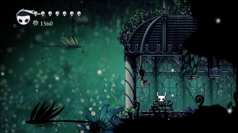
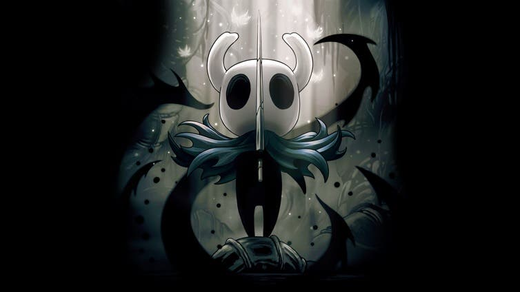
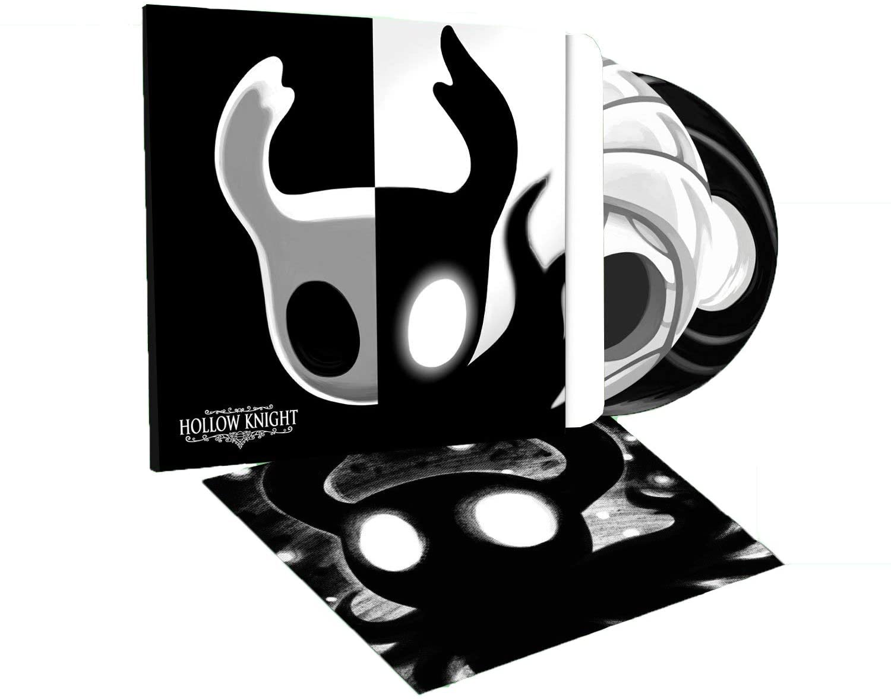

APARTADOS IMPORTANTES DEL VIDEOJUEGO
| APARTADO | DESCRIPCIÓN | IMAGEN |
|---|
| JUGABILIDAD |
Hollow Knight posee un jugabilidad de "Metroidvania" en 2D, en la que el jugador inicia con un ataque basico con su espada "aguijon" y un salto, pero poco a poco consigue dintistas habilidades que lo ayudaran contra los enemigos, el personaje posee alma con la cual puede concentrar para recuperarse del daño recibido o lanzar poderosos hechizos, al morir solo podra usar el 60% de su alma y perdera su diner y para recuperarse debera volver al lugar en donde murió y enfrentarse a una versión oscura de si mismo. El juego esta divido en varias zonas, cada una con sus enemigos y jefes desafiantes, cada uno con sus distintas hibilidades. Teniendo exploración, combates y áreas de plataforma, un mundo que da una sensación libertad asombrosa. |
 |
| HISTORIA |
Una antigua civilización de insectos logró controlar los extraños poderes del alma y oscuridad, pero dicha civilización desaparecería con la llegada de la "diosa" The Radiance, que se apoderó de la mente de los insectos. Tiempo después, un joven insecto llegaría a estas extensas llanuras, sabría que los insectos que la habitaban eran controlados por Radiance, creando una mente colmena; así que el joven insecto liberó al ahora apodado reino de Hollownest de la infección y se proclamó como rey. Sin embargo, The Radiance volvería dispuesta a vengarze del reino que la olvidó. El rey Palido intentó acabar con la infección con los insectos; desesperado, el rey creó a seres lo suficientemente puros y vacíos, a través del poder del alma y oscuridad, para detener a la infección, estos seres serían los caballeros vessel´s o Hollow Knight´s. Después de la masacre que sufrieron estos caballeros, solo uno lograría contener a The Radiance. El Hollow Knight sería encerrado por la eternidad junto con la infección, pero The Radiance lo corrompería y la infección seguiría expandiendose por todo el reino y este cayó. Aquí entra el protagonista, el último vessel, con el único objetivo de acabar con la infección y liberar de una vez por todas a los insectos de Hollownest. |
 |
| GRÁFICOS Y ARTE |
El juego fue programado con el motor gráfico Unity, utilizando dibujos y animaciones. El arte manejado le da una ambientación desolada al juego, pero que a su vez esta lleno de vida. Cada escenario fue hecho con extremo cuidado para dar este tipo de ambientación, y aunque se reciclo varios diseños y se desecharon ideas de zonas y personajes, el juego es lo suficientemente detallado para somprender al jugador con asombrosos paisajes y escenas my detalladas. Este es el apartado que más hace relucír al juego y aclamádo por los críticos. |
 |
| SONIDO Y BANDA SONORA |
El sountrack y sonido del juego le da el toque final a la ambientación del juego, cada personaje, al ser insectos, se comunican por balbuseas (y solos los entendemos por el texto/subtitulos del juego), cada cosa en el juego tiene su propio sonido, todas las zonas poseen efectos de sonido acompañados de su música de fondo, la cual cambia dependiendo de la zona o que luchemos contra uno de los jefes (cada uno con su música específica), dando momentos de tención, tranquilidad o adrenalína, cada sonido en el juego completa la ambientación ya establecida en el arte del mismo. |
 |